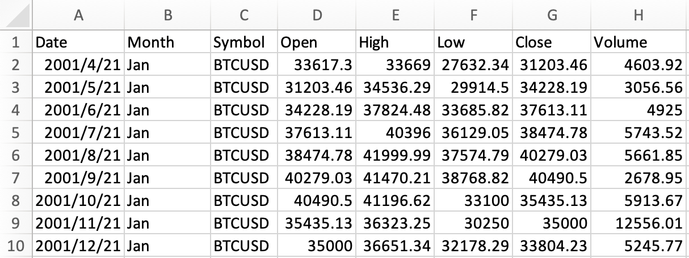
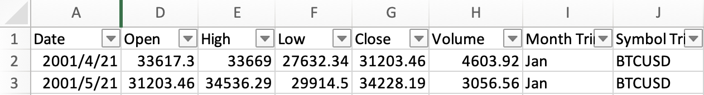
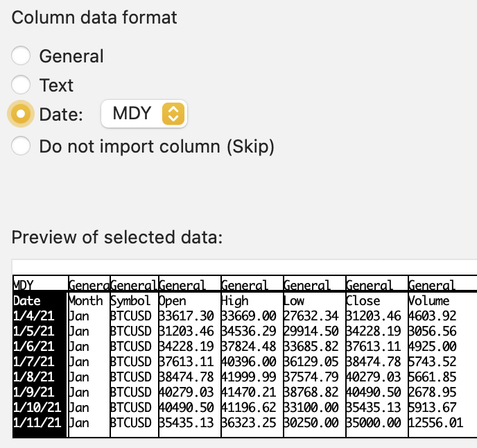
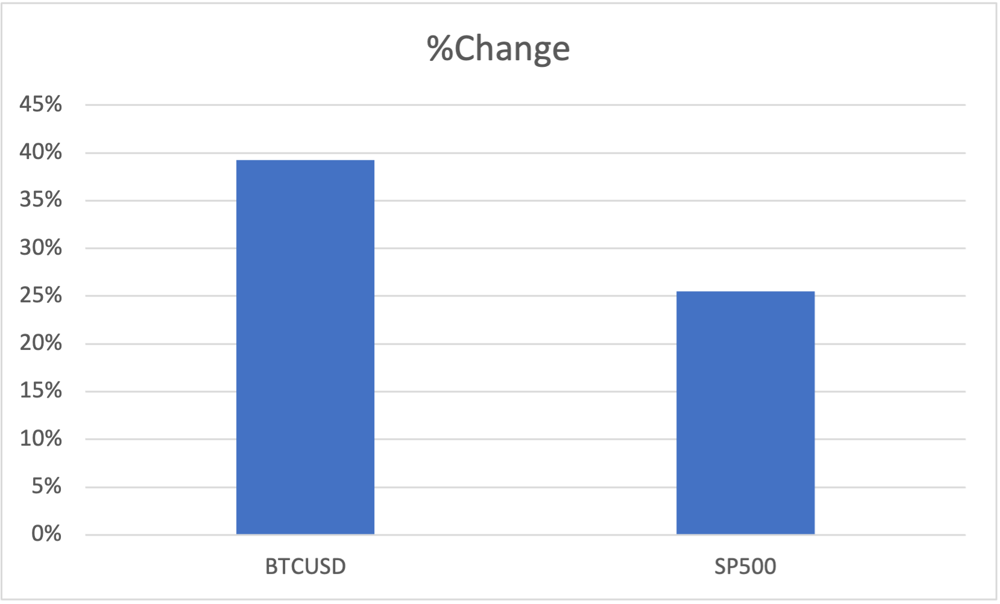
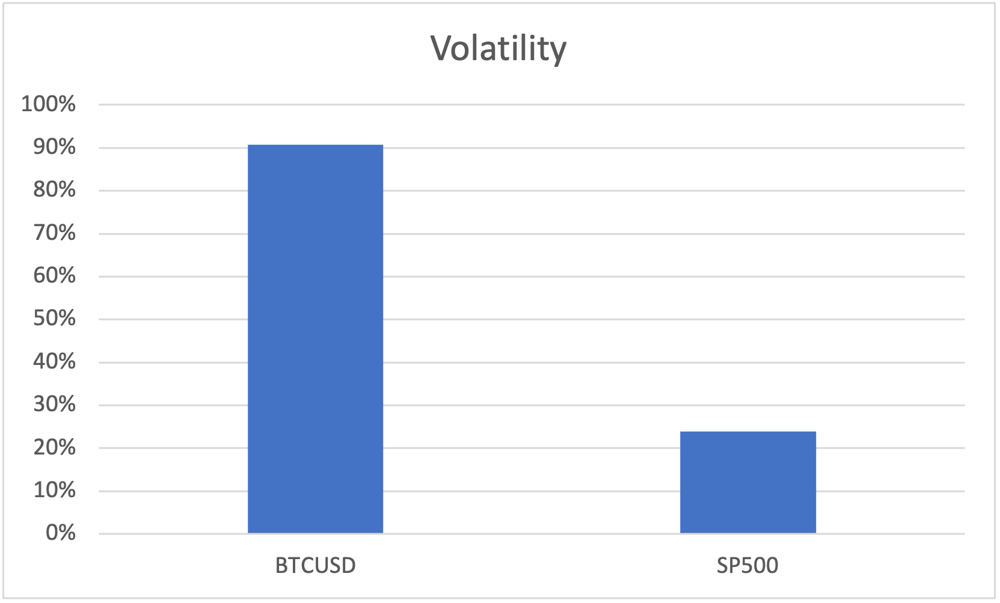

Bitcoin Analysis
The Scenario
Manuela, the Head of Finance at my company, has requested an analysis of the performance of Bitcoin. She’s intrigued by the potential upsides but worried about volatility. She’s asked for a report comparing the behaviour of Bitcoin in the last year (2021) to the behaviour of the SP500, an index often used as the standard for stability. In her email, she attached a dataset with data on both Bitcoin and the SP500 for me to analyse.
Method
Data Import and Cleaning
My first step was to import the csv data into excel. To do this I used File > Import and selected the csv file provided by Manuela and used the ',' as a delimiter.

As the dataset is large it is difficult to manually inspect all the data, to ensure accuracy and consistency, I used Excel's built-in data cleaning tools.
=TRIM(cell) 'This formula removes any leading or trailing spaces from the text in cells'
I then added a filter to each column to easily sort and analyse the data.

From looking at the filter for month, I found an inconsistency in the data format. Thus I used another Excel function to standardise the format.
=LEFT(cell, 3) 'This formula extracts the first three characters from the text in cells'
Finally, I checked each column for missing data, and looking for patterns or anomalies that could affect the analysis.

After checking each column there was only one piece of missing data. However, this piece of data has raised some questions on the date formatting, as it states its in Mar but the month in 'date' is January. Upon further investigation, I noticed an recurring inconsistency in the date format which could affect the analysis.
The Fix
After a little bit of investigation, I realised the issue was with how I imported the file to Excel. The date column was formatted as 'dd-mmm-yy' but the data in the csv file was in 'mm/dd/yyyy' format. To fix this, I reimported the file and selected the correct date format during the import process.

After reimporting the data, I double-checked the date column to ensure the dates were now consistent and accurate.

Then I redid the data cleaning steps above to ensure all data was accurate and consistent.
Data Cleaning
My final step to clean the data was to check if there were are outliers in the dataset that could skew the analysis. To do this, I ordered the columns from smallest to largest and visually inspected the data for any values that were significantly different from the rest. I found two outliers in the data, which I will keep in mind when analysing the data later, as they may affect the results.


Explore and Visualise
I wanted to look at the overall change in the price of Bitcoin and the SP500 over the year. To do this, I calculated the percentage change from the open of the first day to the close of the last day of the year for both Bitcoin and the SP500. Then I showed this as a bar chart to compare the two.

From the chart, it is clear that Bitcoin had a much higher percentage increase in price compared to the SP500 over the year. However, I also wanted to look at the volatility of both assets, so I found the largest and smallest values and found the percentage of the low compared to the high for both. This is where the outlier I found earlier comes into play, as it skews the volatility of Bitcoin significantly. To visualise this, I created another bar chart to compare the volatility of both assets.

Below is the bar chart ignoring the outlier in the Bitcoin data. As you can see there is still a significant difference in volatility between the two assets, but it is less extreme than when excluding the outlier.

Looking at the volatility of each asset, it is clear that Bitcoin is much more volatile than the SP500. This is an important factor to consider when analysing the performance of Bitcoin, as high volatility can lead to significant losses as well as gains.
Another area I am interested in is to see if there is a pattern in the monthly performance of Bitcoin compared to the SP500. To do this, I calculated the average monthly return for both assets and used a conditional formatting heatmap to visualise the data.

From the heatmap, it is clear that SP500 increases consistency each month, with December being the highest performing month. Bitcoin on the other hand has no clear pattern, with months of high gains followed by months of losses.
Finally, I wanted to look at the pattern of the daily high returns of Bitcoin and the SP500. To do this, I used a pivot table with day as the rows and high return as the values, and created a line graph to visualise the data.

From the pivot table, you can clearly see there are no weekend data for SP500 as the stock market is closed on weekends. However, Bitcoin has data for every day of the week, as it is traded 24/7. Below you will see the line graph visualising the daily high returns for both assets.

Looking at the line graph, the outlier previously identified is very clear, as it shows a significant spike in the daily high return for Bitcoin. In order to get a better understanding of the daily high returns without the outlier, I created another line graph excluding the outlier.

After excluding the outlier, it is clear that Bitcoin still has much higher volatility in its daily high returns compared to the SP500. The variability in Bitcoin's daily high returns is much more pronounced, with frequent spikes and drops, while the SP500 shows a more stable and consistent pattern. In fact, in comparision to Bitcoin, the SP500's daily high returns appear relatively flat, indicating lower volatility.
Conclusion
In conclusion, my analysis of Bitcoin and the SP500 has shown that while Bitcoin has had a significantly higher percentage increase in price over the year, it is also much more volatile compared to the SP500. The high volatility of Bitcoin can lead to significant losses as well as gains, which is an important factor to consider when analysing its performance. Additionally, the monthly performance of Bitcoin shows no clear pattern, while the SP500 increases consistently each month. Finally, the daily high returns of Bitcoin are much more variable compared to the SP500, indicating higher volatility. Overall, while Bitcoin may offer higher potential returns, it also comes with higher risks due to its volatility.
My recommendation to Manuela would be to carefully consider the risks associated with investing in Bitcoin, and to potentially limit exposure to it in favour of more stable assets like the SP500. If Manuela does decide to invest in Bitcoin, I would suggest diversifying her portfolio to mitigate the risks associated with its volatility. I would also suggest looking at the trends of Bitcoin over a longer period of time to get a better understanding of its performance and volatility. As if the rise in prices in May/April or October/November is a common occurrence it would be important to factor this into any investment decisions. Additionally, I would recommend regularly monitoring the performance of Bitcoin and adjusting the investment strategy as needed to manage risk. If Manuela is looking for more stable returns, I would recommend focusing on assets like the SP500 that have a proven track record of consistent growth over time.